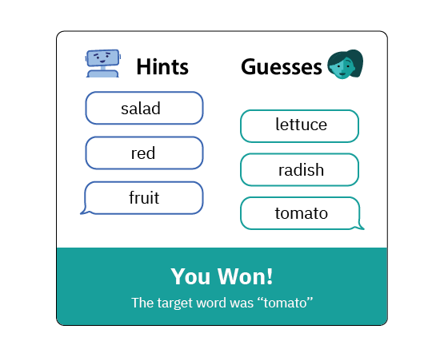
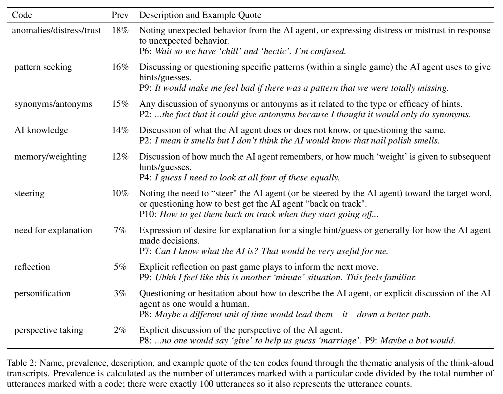

Mental Models of AI Agents in a Cooperative Game Setting
Publication citation
Katy Ilonka Gero, Zahra Ashktorab, Casey Dugan, Qian Pan, James Johnson, Werner Geyer, Maria Ruiz, Sarah Miller, David R. Millen, Murray Campbell, Sadhana Kumaravel, and Wei Zhang. 2020. Mental Models of AI Agents in a Cooperative Game Setting. In CHI Conference on Human Factors in Computing Systems Proceedings (CHI 2020). (to appear)
Authors
Katy Ilonka Gero, Zahra Ashktorab, Casey Dugan, Qian Pan, James Johnson, Werner Geyer, Maria Ruiz, Sarah Miller, David R. Millen, Murray Campbell, Sadhana Kumaravel, and Wei Zhang.
Contact
katy@cs.columbia.edu
Affliation

We studied how people thought an AI agent worked when they played a cooperative word guessing game. (This is their mental model of the AI agent.) We found three categories of beliefs people have about AI agents: global behavior, local behavior, and knowledge distribution.
Play the game participants played: Passcode
Motivation
Mental models define how we interact with the world. When we sit down to drive a car, or explain how lights work to a child, or look for a file on our computer, we use our mental models to make sense of the world and act on it.
As AI systems appear in high-stakes environments, such as decisions about who to hire or disease diagnosis, understanding people’s mental models of these systems becomes increasingly important. In this work, we had people play a cooperative word guessing game with an AI agent, and through two studies (a think-aloud study and an online, large-scale study) investigated how people develop mental models of AI agents.
Research Questions
- What should conceptual models of AI systems include?
- How do users develop mental models of AI systems?
- What encourages accurate mental models of AI systems?
Passcode: A Word Guessing Game
Participants played a word guessing game with a sophisticated, reinforcement-learning-based AI agent. In this game, one person has a secret word they try to get the other person to guess by giving related, single word hints. See the example gameplay below:

One important finding of our research was that understanding the details of how the AI agent was designed and trained did not give us a full understanding of its behavior. For example, although the AI agent had access to good information about the word 'Paris', it gave very poor hints. Characterizing the AI agent (developing a conceptual model) required both understanding how it was trained as well as running a series of analysis based purely on its behavior during gameplay.
Results
In our first study we used thematic analysis to develop a set of codes which describe the types of concerns participants had when playing with the AI agent. The most prevalent codes show what people think about most when playing with the AI agent: they worry about why it did something unexpected, they try to find patterns in its behavior, and they wonder what kinds of knowledge it has.
In our second study, we found that people who had the best understanding of how the AI agent behaved were able to play the game the best. However, as is expected with complex systems, no one had a perfect understanding of how the AI agent worked.
Our work provides a new framework for modeling AI systems from a user-centered perspective: models should detail the global behavior, knowledge distribution, and local behavior of the AI agent. Our studies also have implications for the design of AI systems that attempt to explain themselves to the user.
